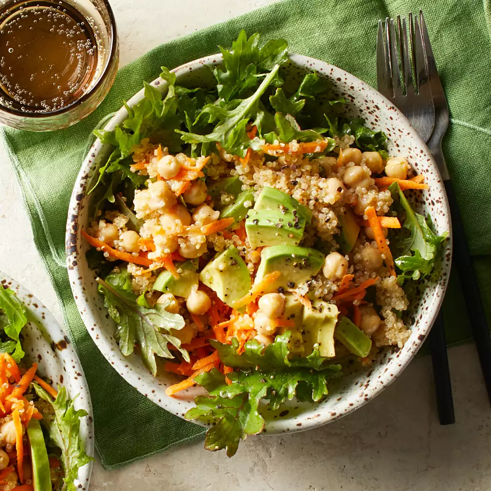

Are you hungry? Here are some Meal of your choice
Breakfast |
Luch |
Dinner |
|---|---|---|
Oatmeal Cookies: |
Tuna Wraps(Tuna Sandwiches): |
Oven-Baked Salmon: |
 |
 |
 |
A healthy breakfast meal. It can be made in minutes. Oatmeal contains fiber which has the ability to reduce your cholesterol. |
Tuna can be one of the best ingredients to put into a meal for the day. |
Salmon can be one of the most greatest and healthiest meal |
|
|
|
|---|
Avocado Toast: |
Roasted Potatoes: |
Quinoa Avocado & Chickpea Salad: |
|---|---|---|
 |
 |
 |
A toasted bread spread with avocado is a good meal for a great start for a morning day , it consists of folate and fibre that can be beneficial for the heart |
Potatoes contain an amount of soluble fiber. It is more healthy eating roasted then a fried food |
A salad for a dinner meal can be one of the best, this salad contains many healthy ingredients to let reduce your cholesterol |
|
|
|
|---|
Choose foods that are low in saturated fat, trans fat, and cholesterol. Be sure to include whole grains, vegetables, and fruits.
Examples:
-Soda |
-Fried Foods |
|---|---|
-Full fat Dairy |
-Baked Goods (sweets) |
-Eggs |
-Steak beef |
-Roast ribs |
-Pork chops |